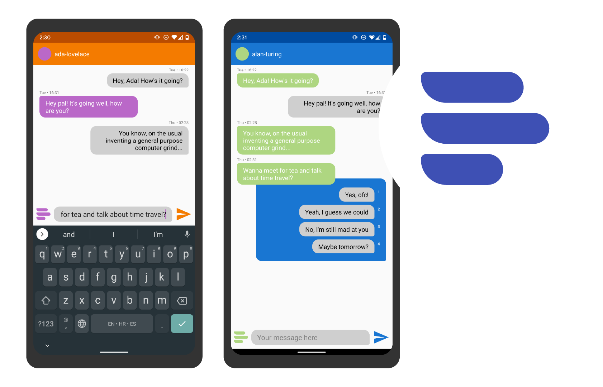
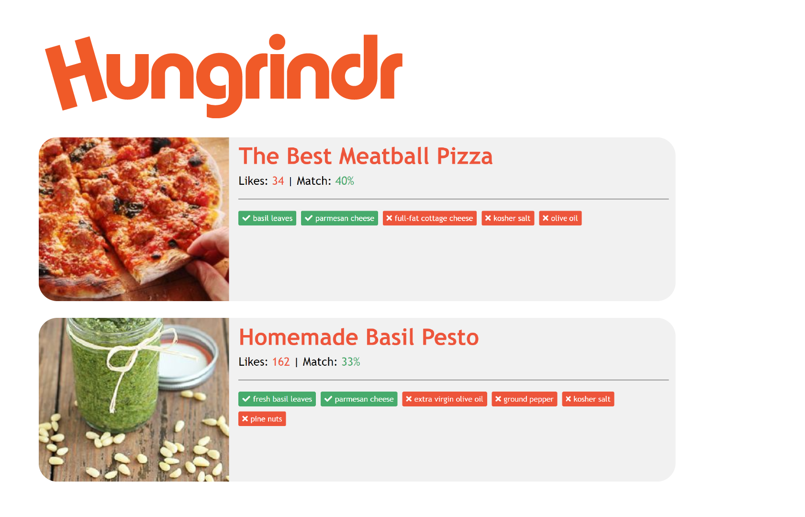

MissIt Chat
MissIt Chat is a messaging app for Android which, besides regular text messaging (like SMS), enables resource restricted (RR) users to respond to messages received from resource unrestricted (RUR) users by sending one of 4 responses which the RUR user defined. A RUR user, in anticipation of the other user being RR, is responsible for entering at least 2 and up to 4 suggested responses, which are transmitted to the RR user via a traditional text messaging channel. The RR user responds by selecting one of the suggested responses, which triggers a MissIt-like transmission of a missed call the length of which corresponds to the selected response.
MissIt is a communication service that uses missed calls to transmit messages between phones. MissIt encodes data by modulating the duration of missed calls. Using missed calls to transmit data for short text messaging in place of protocols such as SMS, RTT or IM is in the interest of resource-constrained users in developing regions where digital communication is necessary, costs of traditional message protocols is too high and high latency in exchange for low or no cost is tolerable.
MissIt Chat does not implement the MissIt interface, but instead emulates the experience of a MissIt message exchange through the interface including suggested response bubbles, progress bars etc., and the underlying channels: SMS for RUR users and missed phone calls for RR users through a Firebase database protocol which requires an internet connection.
Hungrindr
Hungrindr is the place to be if you're hungry, on a budget or just don't feel like making the trip to the grocery store! Or if you really wanna have your avocado with your sweet potatoes and you're not quite sure how to make it work.
But really, it is an ingredient-based recipe search engine that matches your list of ingredients with the best recipes all around the internet. Upon entering your list of ingredients, you are taken to a results page containing the full list of ingredients for each recipe and your match score, and it tells you exactly what you're missing. On top of all of that, recipes are presented in a beautiful, unified interface that will make your cooking experience that much better.
Under the hood, Hungrindr runs a Node.js powered server which uses pug for templating and a Rapid API for help with gathering recipes. It was made with love at Tufts University, on a team consisting of Keisha Mukasa, Grace Fagan, Amina Dieng and Kiara Rose.